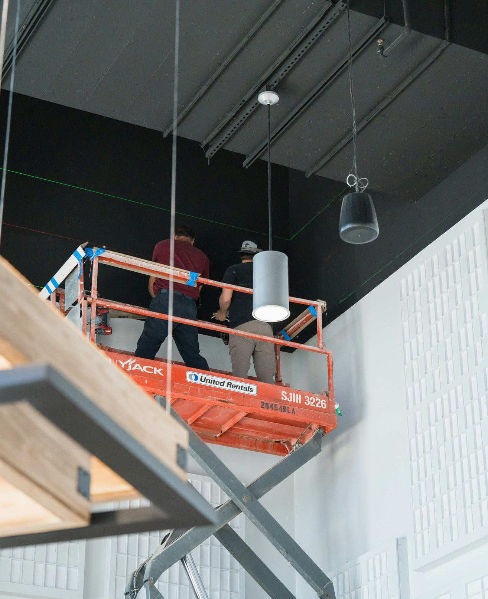
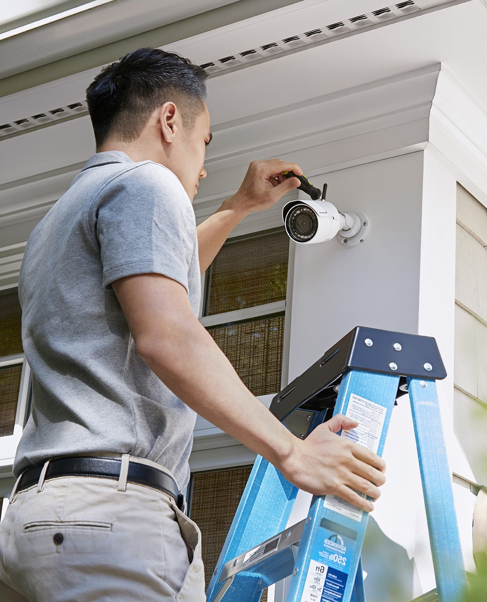
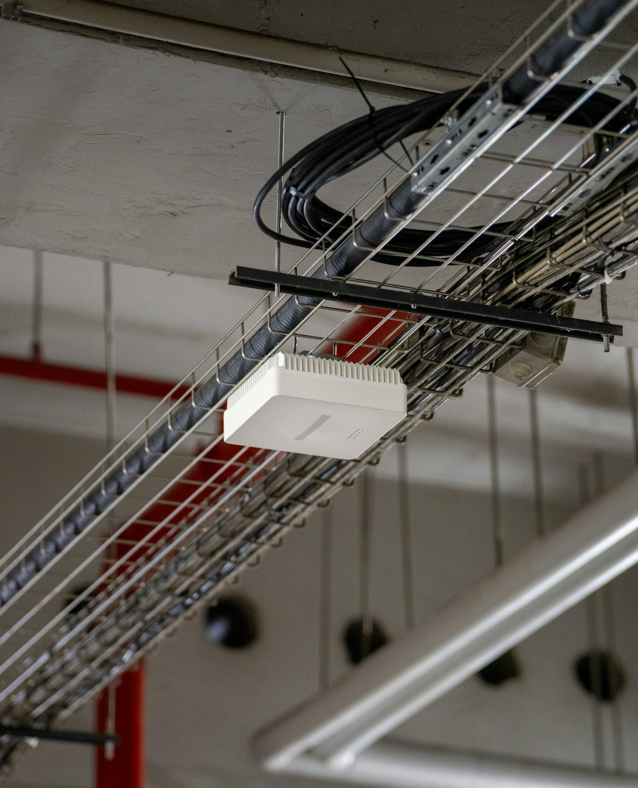
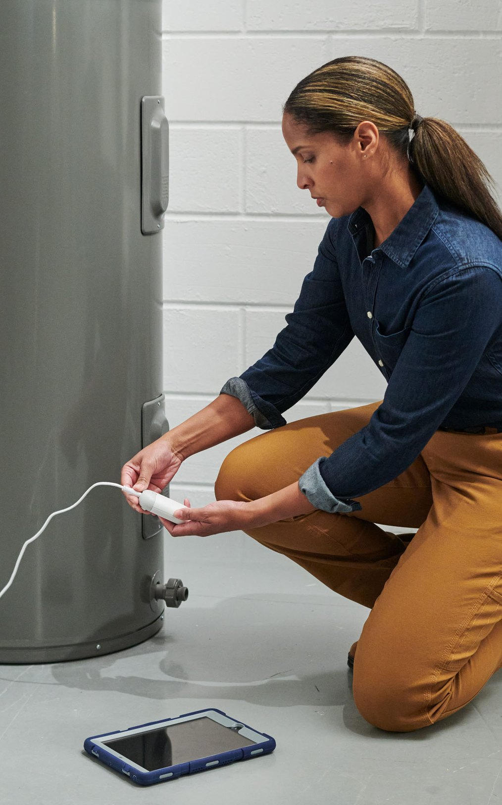
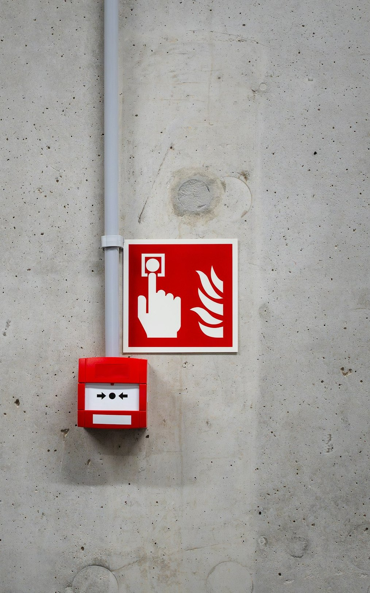

Tech Direct Business Review · 2026
What's working, what's not, and what we can do
about it.

Customers like buying from Sales, but they don't like the price. The market leader is back this year, and cheaper online sellers keep growing. Sales has to win on what competitors can't offer.
Tech Direct built a cost base for a bigger Consulting business, and then outside customers stopped coming. Referrals from Sales and Engineering are hiding the decline.
Sales and Consulting keep sending Engineering customers, but Engineering has slipped a little every year on profit, on market share and on people. That makes it easy to miss.
Tech Direct has everything needed to take a customer from first call to working system. But the customer is still the one connecting the pieces.
When a consultant leaves and an engineer fills the gap, Tech Direct is effectively turning one problem into two separate ones, and additional training has been unable to fix this problem.

Tech Direct knows what each division earns, but not how customers and staff move between them. Staff are discouraged from crossing those lines, but most of the revenue depends on it anyway.

Tech Direct isn't the cheapest, and it doesn't need to be, because it can be the easiest. The pieces are already in place, they just need to work together.


This deck runs on the same tokens.css file I built for my case study presentation, with values I scraped from Safelite.com using Claude Code. Photography is from Unsplash.